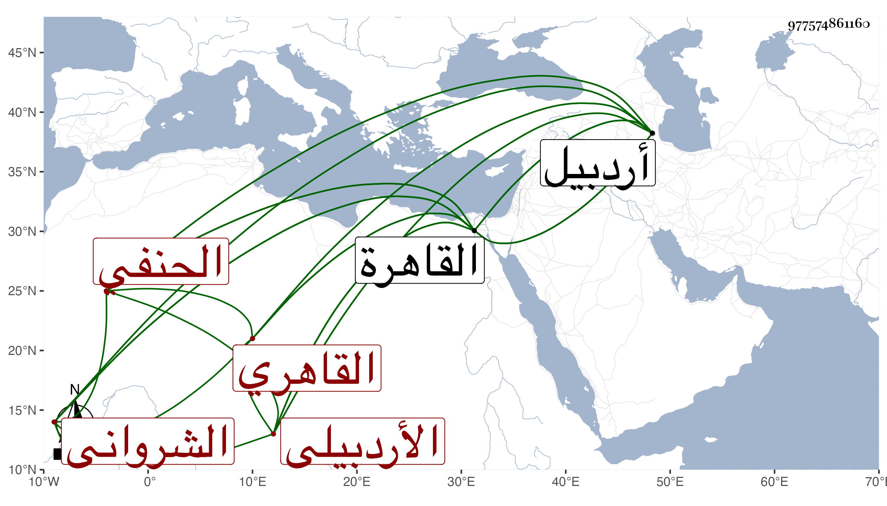

0902Sakhawi.DawLamic.ITO20230111-ara1.EIS1600.977574861160
Biography ID: 977574861160
417
عبيد الله بن عوض بن محمد الجلال بن التاج الشرواني الأصل والمنشأ الأردبيلي المولد ثم القاهري الحنفي والد أحمد وعبد الرحمن وعبد الله وعبد اللطيف ومحمد والبدر محمود المذكورين في محالهم . كان والده بارعا في الطب فاستدعاه الفقيه الجمال يوسف الأردبيلي لطب ابنته فقدم عليه فوجد مرضها خطرا يحتاج لمشارفتها في كل لحظة فالتمس من أبيها التزوج بها ليتمكن من مخالطتها فتوقف فرغبته أمها فيه فأجاب فتزوجها وعالجها حتى عوفيت ودخل عليها فحملت بصاحب الترجمة وكان مولده هناك باردبيل فهو سبط الجمال المذكور وقدم بلدة شروان ثم القاهرة ومن شيوخه السيد عبد الله النحوي شارح اللب واللباب ويعرف بنقركار الماضي وأرشد الدين المقولي شيخ الشيخونية بعد القوام الاتقاني وركن الدين القرمي أحد شراح الهداية والقطب التحتاني وآخرون وتفنن في العلوم ودرس في المذهبين الشافعي والحنفي وكتب على الهداية والمجمع والكشاف وغيرها من كتبه حواشي مفيدة متقنة رأيت كثيرا منها ووقفها بالصرغتمشية وكان معيدا بها وولي تدريس الفقه بالإيتمشية والأبو بكرية ظاهر سوق الجوار وأم السلطان بالتبانة وكان مسكنه بها وقضاء العسكر ، وسافر مع منطاش في الفتنة وامتحن بسبب ذلك وتردد لنوروز بسبب إسماع الحديث عنده ثم قيل له أن شيخ الحديث هو العراقي فاستدعى به فلما حضر قال عبيد الله مرسومكم قد حصل الاستغناء فقال بل كونا معا حكاه ولده وأن ممن قرأ عليه التفهني . مات بالقاهرة في رابع عشري رمضان سنة سبع قال العيني وكان فاضلا أدرك كثيرا من مشايخ العرب والعجم وكان في أول أمره شافعيا ثم تحول حنفيا وأكثر الاشتغال فيه حتى درس وأفاد وكتب كثيرا وولي تدريس المدرسة البكرية والخاتونية التي بالتبانة وأعاد بالصرغتمشية وغير ذلك وولي قضاء العسكر في أيام منطاش وتأخر بذلك عند الظاهر وقال شيخنا في إنبائه عبيد الله بالتصغير ابن عبد الله الأردبيلي جلال الدين الحنفي لقي جماعة من الكبار بالبلاد العرابه وغيرها وقدم القاهرة فولي قضاء العسكر ودرس بمدرسة أم السلطان بالتبانة وغير ذلك وكانت له فضيلة في الجملة . ومات في أواخر رمضان انتهى . وتسميته والده بعبد الله سهو فقد قرأت نسبه بخطه؛ بل ذكره شيخنا على الصواب في ترجمة يوسف الأردبيلي من الدرر حيث قال وهو جد الشيخ جلال الدين عبيد الله بن الشيخ تاج الدين عوض بن محمد الأردبيلي مولدا الشرواني منشأ لأمه كان يقرئ في المذهب وحكى لنا البدر بن التنسي المالكي أنه كان معظما عند الأتراك منسوبا إلى العلم وكان الأمراء في أواخر القرن الذي قبله يتنافسون في سماع الحديث فكان كل أمير منهم يجعل عنده شيخا يسمع الناس ويدعو الناس للسماع وكان جلال الدين بن القاضي بدر الدين بن أبي البقاء محبا في التقدم والرفعة والتصدر في المجالس وكان ذا هيئة عظيمة وكانت هيئة عبيد الله رثة فأراد أن يجلس فوقه فلم يمكنه وكان من الدهاة يغيظ ولا يغتاظ فلما رأى رغبة الجلال في ذلك قال إن كنت تريده فأعطني خمسمائة درهم فأعطاه فكان يجلس فوقه وذلك في بيت ايتمش فاتفق أنهم حضروا يوما في بيت نوروز فأراد الجلوس فوقه فلم يمكنه عبيد الله وقال له إنما أخذت منك العوض على الجلوس هناك وأما غيره فإن كنت تريد ذلك فجدد عوضا أو كما قال وحكى القاياتي أن عبيد الله هذا كان شافعيا وكذا أسلافه وأن بعض آبائه صنف في المذهب بل أهل أردبيل بلده كلهم شافعية وأنه إنما تحنف على يد يلبغا فإنه كان يقول من ترك مذهب الشافعي وتحنف أعطيته خمسمائة وجعلت له وظيفة ففعل ذلك جماعة منهم صاحب الترجمة والسراج قاري الهداية وحكى أنه رأى الشافعي في المنام ومعه مسحاة فقيل له ما تفعل بهذه فقال أخرب بها الكبش وهو بيت يلبغا فلم يلبث أن نكب يلبغا وخرب بيته إلى الآن .
